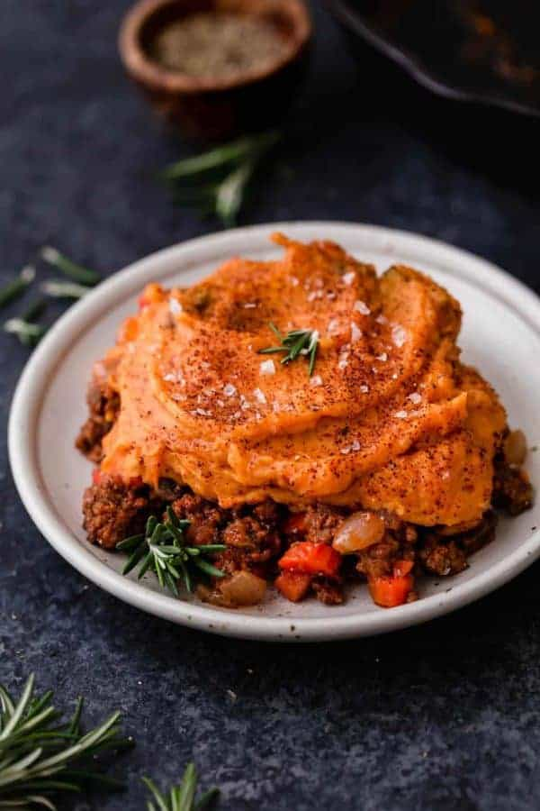

Sweet Potato Shepard's Pie

Description
You really can’t beat a dish made of hearty, wholesome, comfort foods!
This Shepherd’s Pie has it all. It’s incredibly flavorful, made with
real food ingredients and it’s freezer-friendly, too. Because it
freezes well, we recommend doubling the recipe and freeze half of
it for a future meal. Having a freezer full of already prepared meals
makes for easy weeknight dinners. Feel free to substitute the ground
beef for ground lamb and regular potatoes for the sweet potatoes to
make this a more traditional Shepherd’s Pie recipe. We chose to use
ground beef in place of lamb because ground beef is more accessible
and budget-friendly yet still creates a delicious, family-friendly
meal.
Ingredients
For The Shepard's Pie Filling:
- 1 lb ground beef or lamb
- 2 medium carrots, peeled and diced
- 1 small green pepper, diced
- 1 small yellow onion, diced
- 1 cup mushrooms, cleaned and stemmed, diced
- 4 cloves garlic, minced
- 3 oz tomato paste
- 1 tsp chili powder
- 1/2 tsp dried rosemary or dried herb of choice
- 1/2 tsp fine salt or to taste
- 1/4 tsp black pepper
- 1/4 cup water
For The Sweet Potato Topping:
- 2 large sweet potatoes (about 12 oz each), peeled and cubed
(~6 cups cubed)
- 1 tbsp butter (may substitute ghee or coconut oil for Whole30)
- 1/2 tsp chili powder
- 1/4 tsp fine salt
Steps
- Preheat oven to 375℉. Bake the sweet potatoes until fork tender,
45 to 60 minutes (see our directions for perfect baked sweet
potatoes). Alternatively, you can steam peeled and diced sweet
potatoes until tender.
- In a medium skillet over medium-high heat, saute the ground beef,
chopped carrots, green pepper, onion, mushrooms, and garlic.
Continue cooking until the carrots are soft, about 12-15 minutes.
Begin making the sweet potato topping while the filling cooks.
- To make the topping: Place the peeled and baked/steamed sweet
potato with all of the topping ingredients in a food processor
(or blender) and process until smooth. NOTE: If using white
potatoes, we recommend mashing them by hand rather than blending
to prevent them from getting pasty.
- Back to the filling: Once the carrots are soft, stir in tomato
paste, chili powder, rosemary, salt, black pepper, and water.
- Final step: Top the meat filling with the sweet potato mash.
If you’re not using an oven-safe 10-inch cast-iron skillet,
transfer the meat filling to a casserole dish or 9×9 inch baking
dish and top the meat filling with the sweet potato mash.
Sprinkle the top with a little sea salt and chili powder.
- Bake for 10 minutes. Remove from oven and serve.